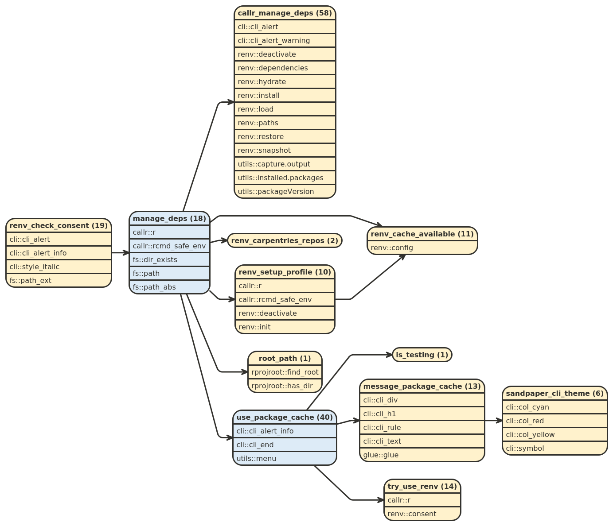
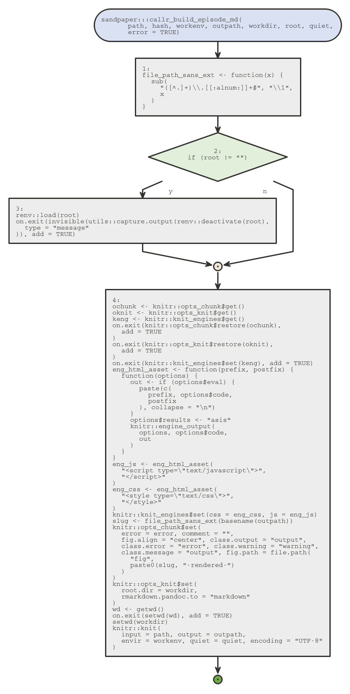

8 The R package cache
8.1 Introduction
All lessons that use The Workbench can build using either Markdown or R Markdown file formats. The R package cache allows for R Markdown file formats to be built reproducibly and consistently. The cache is expected to be mindful of these formats in the following ways (as taken from Building Lessons With A Package Cache):
- reliable setup: the version of the lesson built on the carpentries website will be the same as what you build on your computer because the packages will be identical
- environmentally friendly: The lesson dependencies are NOT stored in your default R library and they will not alter your R environment.
- transparent: any additions or deletions to the cache will be recorded in the lockfile, which is tracked by git.
The package cache is only used when building lessons with R Markdown elements and performs the folowing tasks in a separate R session to avoid polluting the user’s environment:
Before markdown is built: We check for consent to use the package cache with
sandpaper:::renv_check_consent()and then provision any packages needed for the lesson withsandpaper::manage_deps()Dependency Tree forrenv_check_consent()The
renv_check_consent()checks if the user has runsandpaper::use_package_cache(), which allows {renv} to create and maintain a global package cache on their system.
During each markdown rendering: If we have consent, we load the {renv} profile to reproducibly render the markdown document
Flow Diagram forbuild_episode_md()This flow represents the build process for each R Markdown file. This function is called from within a separate R process. The only conditional here determines if the {renv} environment needs to be loaded.

This chapter will go into the history of using a package cache in Carpentries lessons, dig into the design principles, and understand challenges for moving forward.
8.2 A Bit of History
As of this writing, The Workbench is able to reproducibly build and deploy lessons across machines and infrastructures thanks to the package cache provided by {renv}, but it is important to understand how we got here and what the motivations were, because the tools we have now simply did not exist in 2016. This section dives a bit into the history of writing R markdown content in Carpentries lessons and what lessons… were learned.
Software Carpentry Lessons have been able to handle content written in R Markdown since July 2014. This process was disrupted in June 2016 with the release of the new styles template, but luckily, François Michonneau swooped in to the rescue by providing a templating setup that would not only render the Markdown, but keep the output separate. The very next month, François submitted carpentries/styles#83, which added the capability to automatically detect and install packages needed to build an R-based lesson.
Of course, back in 2016, in order to deploy an R-based lesson, you still had to build it locally, which sounds simple until you consider the aspect of reproducibility (Marwick 2016; Wilson et al. 2017). If you build the same document on two different machines, there is no guarantee that you will get the same results. Thus, in May 2018, Raniere Silva added the ability to build R-based lessones on Continuous Integration. Finally, in 2020, Maxim Belkin added GitHub Workflows to the styles repository so that we no longer had to rely on TravisCI.
These changes allowed a single, definitive source for lessons to be built, but alas, they still were not reproducible because the packages used to build the lesson were always being run with the most recent versions. This lead to problems with outputs changing or worse, the entire build failing (see swcarpentry/r-novice-gapminder#746. Moreover, lesson maintainers of thes R lessons encountered the following problems:
- Every time they built their lessons locally, their default R package library would update. This was especially a problem for maintainers who were working on their dissertations and really could not afford to lose work due to their packages changing.
- Maintainers were unsure of what would happen to the lesson with any given pull request and would have to manually run the results or trust the contributor.
- All the normal struggles with Jekyll.
Reproducibility is hard. Software ecosystems are always shifting like the sand dunes in the Sahara (Vaniea and Rashidi 2016). By late 2020, we had come a long way in terms of automating the build process for R-based lessons, but there were still many hills to climb. It was in this context that we developed the use of {renv} and the R package cache to automate package provisioning, caching, and auditable updating so that R-based lessons could reliably be deployed with no surprises.
8.3 Design Principles
It is worth reading through carpentries/sandpaper#21 to see the discussion and thoughts around the origin of the design for using this feature. It was implemented during a three week period between 2021-08-24 and 2021-09-16, as detailed in the pull request carpentries/sandpaper#158.
It’s easy to think about a package cache as a way to declare dependencies for a lesson in a reproducible way, but it’s more than that. The philosophy of R packages on CRAN is that they all need to work with the latest versions of each other, so a lesson that teaches R should be reasonably up-to-date. Thus, any given package must be able to do the following four things in the package cache:
- enter the package cache and record the version number
- exit the package cache and be removed from the record
- update to the latest version
- pin to a specific version
Every good tool for handling a package cache does these four things, and the workflow to add a new package with {renv} (before version 1.0.0) flows like this:
- Contributor A would like to add {packageA} to the project
- Contributor A opens the project and installs {packageA}
- Contributor A adds {packageA} to the project content
- Contributor A takes a snapshot of the project to the lockfile
In this scenario, Contributor A must explicitly install the package to the project before they can use it regardless of whether or not they have that package on their system. Steps 2 and 4 of this workflow involve explicitly working with the package cache and, in my experience, R users will often jump directly to step 3, which leads to failed builds and frustration.
When designing a user interface, you also need to think about what distractions and real-life stressors the lesson maintainer/developer/contributor is potentially dealing with. You want to minimize the amount of fuss that the contributor needs to do to get something working. A contributor should only have to add a package once to the lesson content to make it available. This means that the following steps are taken to add a new package:
Contributor A has {packageA} in their library and wants to demonstrate the use of {packageA} in the lesson.
Contributor A inserts a code block in the lesson that declares
library("packageA")orpackageA::fun()somewhere in the code block:```{r} # load the packageA package library("packageA") ```
After that, when the lesson is built, {packageA} is automatically added to the lockfile. If Contributor A decideds to no longer use {packageA}, they can remove it from the lesson content and the next build will remove {packageA} from the lockfile. In this way, the lesson content remains the source of truth for the packages used in the lesson and the lockfile represents the metadata associated with the lesson.
That means the following WRT to packages in a lesson:
- Users should not have to know that the lockfile exists
- The packages used in the lesson should be locked to specific versions and be reproducible across machines
- The packages used in the lesson should not overwrite the packages in the user’s default R library
- Any package that is missing from the user’s machine should automatically be provisioned
- All packages used should be the correct version
- The lockfile should be auditable
- The lockfile defining the package versions should update/remove packages according to the contents of the lesson
- Users should be able to specify versions in the lockfile easily
- Users should be able to automatically update the lockfile